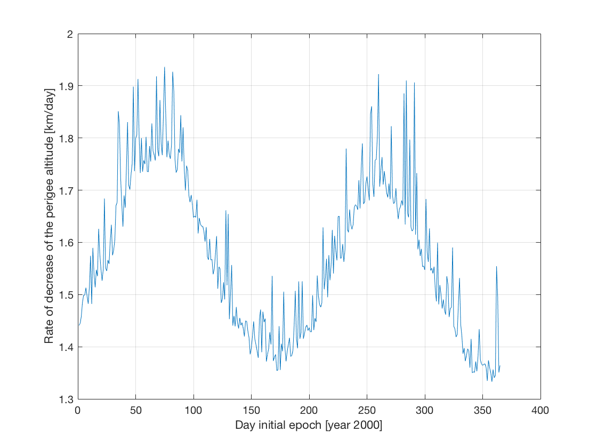

2.3. Perturbed Earth-orbiting Satellite Lifetime Maximisation¶
This page describes how to set up a single-variable optimisation of the lifetime of an Earth-orbiting satellite using the JSON Interface.
2.3.1. Problem Setup¶
The rate of decrease of the perigee altitude is assumed to be a good indicator of the lifetime of the satellite. If a small rate of decrease is undergone, longer lifetimes can be expected, and vice versa. Thus, the optimisation problem is defined as:
subject to:
The initial sate of the satellite is given by:
- Perigee altitude of 200 km.
- Apogee altitude of 2000 km.
- Inclination of 0.2 rad.
- Zero argument of perigee, longitude of the ascending node and true anomaly.
Other relevant properties of the satellite are set constant:
- Mass of 400 kg.
- Reference area of 10 m \({}^2\).
- Drag coefficient of 2.2.
- Radiation pressure coefficients of 1.5.
The following orbital perturbations are considered:
- Spherical harmonics gravity of the Earth up to degree 7 (GGM02C model).
- Third body perturbations due to Sun and Moon gravity.
- Solar radiation pressure (with occultations by the Earth).
- Aerodynamic drag (NRLMSISE00 model).
Before starting with the maximisation process, we need to define the initial epoch and the maximum final epoch. Since \(t_0\) is the optimisation variable, and the value of \(t_f\) depends on \(t_0\), these two variable cannot be defined in a shared JSON file, but have to be defined individually for each case. A total of 365 days (one for each day of the year 2000) will be propagated.
The next step is to define the file tree. In this case, we will have a shared.json file containing the settings shared by all propagations, and then an inputs folder where the individual root input files for each case will be located. After running the propagations, an outputs folder containing the results for each case will be generated. Thus, the file tree will look like this eventually:
lifetimeMaximisation
|
| inputs
| |
| | day1.json
| | day2.json
| | ...
| | day365.json
|
| outputs
| |
| | day1.txt
| | day2.txt
| | ...
| | day365.txt
|
| shared.json
2.3.2. General Settings¶
The global frame origin is the Solar System barycentre (SSB), which is the default value for the key globalFrameOrigin, so there is no need to provide it. The globalFrameOrientation is set to "J2000".
Then, we request using the standard Spice kernels, namely pck00010.tpc, gm_de431.tpc, de430_small.bsp and pck00010.tpc. We do this by defining the key spice to be:
{
"useStandardKernels": true
}
Since spice.preloadEphemeris defaults to true, the ephemeris of the celestial bodies from the period initialEpoch to finalEpoch will be preloaded using an interpolation step that is, by default, 300 seconds, and which can be configured through the key spice.interpolationStep.
2.3.3. Body Settings¶
The next step is to define the body settings. In this case, we include the Sun, Earth, the Moon and the orbiting body (named satellite). Thus, we set the key bodies to be:
{
"Sun": {
"useDefaultSettings": true
},
"Earth": {
"useDefaultSettings": true,
"atmosphere": {
"type": "nrlmsise00"
},
"gravityField": {
"type": "sphericalHarmonic",
"model": "ggm02c"
}
},
"Moon": {
"useDefaultSettings": true
},
"satellite": {
"initialState": {
"type": "keplerian",
"periapsisAltitude": 200000,
"apoapsisAltitude": 2.0E+6,
"inclination": 0.2
},
"mass": 400,
"referenceArea": 10,
"aerodynamics": {
"forceCoefficients": [ 2.2, 0, 0 ]
},
"radiationPressure": {
"Sun": {
"radiationPressureCoefficient": 1.5,
"occultingBodies": [ "Earth" ]
}
}
}
}
As can be seen, the bodies Sun and Moon have no properties other than the useDefaultSettings set to true, which means that their properties (such as gravitational parameter, ephemeris, gravitational models) will be loaded automatically from Spice. For Earth, we also use the default settings, but then we re-define the atmosphere and the spherical harmonic gravity model, since NRLMSISE00 and GGM02C are not used by default. We do this by defining the bodies.Earth.atmosphere and bodies.Earth.gravityField keys.
..note:: The order in which the keys useDefaultSettings, atmosphere and gravityField are defined inside the bodies.Earth objects is irrelevant: the default settings will always be loaded first, and then the settings specified in the input file (if any) will be overridden.
For the orbiting body, satellite, we do not specify the key useDefaultSettings, which defaults to false. Thus, no properties will be pre-loaded. We provided an initialState of type "keplerian". We need not define the keys argumentOfPeriapsis, longitudeOfAscendingNode and trueAnomaly, which are assumed to be 0. Then we define its constant mass and referenceArea. Finally, we add aerodynamics and radiation pressure settings. In both cases, there is no need to specify a key type because constant aerodynamics coefficients and cannonball radiation pressure are the default types. For the aerodynamics, we only need to specify the force coefficients (only drag, no lift nor side forces). For the key radiationPressure, we provide an object in which each key is the name of the radiating bodies (in this case, only the Sun). We specify the radiationPressureCoefficient and a list of occultingBodies (i.e. bodies which can block the flux from the Sun on the satellite).
2.3.4. Propagation Settings¶
Then, we specify the propagator settings. In this case, we are going to propagate the translational state of satellite about Earth, so we define the key propagators to be:
[
{
"integratedStateType": "translational",
"centralBodies": [ "Earth" ],
"bodiesToPropagate": [ "Asterix" ],
"accelerations": {
"satellite": {
"Earth": [
{
"type": "sphericalHarmonicGravity",
"maximumDegree": 7,
"maximumOrder": 0
},
{
"type": "aerodynamic"
}
],
"Sun": [
{
"type": "pointMassGravity"
},
{
"type": "cannonBallRadiationPressure"
}
],
"Moon": [
{
"type": "pointMassGravity"
}
]
}
}
}
]
We specify the key propagators[ 0 ].accelerations, an object containing lists of accelerations. The inner keys (in this case, Earth, Sun and Moon) are the names of the bodies exerting the accelerations, while the outer keys (in this case, satellite), are the names of the bodies undergoing the accelerations. Thus, accelerations.satellite.Earth is read as “accelerations on the satellite caused by Earth”. In this case, this is a list with two accelerations: the spherical harmonic gravity up to degree 7 and order 0 (i.e. only zonal terms), and the aerodynamic acceleration caused by the atmosphere. For the Sun, we specify the point-mass gravitational attraction and the cannonball radiation pressure acceleration. Finally, for the Moon, there is only one acceleration: the one caused by the point-mass gravitational attraction.
In this case, some keys of propagators[ 0 ] have been omitted. For instance, the key type has not been specified, meaning that the default value "cowell" is used.
2.3.5. Integration Settings¶
The next step is to define the integrator settings. The initial time is retrieved from the key initialEpoch defined at root level. Thus, we define the key integrator to be equal to the following object:
{
"type": "rungeKuttaVariableStepSize",
"rungeKuttaCoefficientSet": "rungeKuttaFehlberg78",
"initialStepSize": 60,
"minimumStepSize": 1,
"maximumStepSize": 10000,
"relativeErrorTolerance": 1E-10,
"absoluteErrorTolerance": 1E-10
}
The key saveFrequency is not specified, so the save frequency is assumed to be 1, which means that all the steps are saved.
2.3.6. Output Settings¶
Then, we have to define the files to which the results of the integration should be saved. We do this by assigning an array of objects containing export settings to the export key:
[
{
"file": "@path(outputs/${ROOT_FILE_STEM}.txt)",
"variables": [
{
"body": "satellite",
"dependentVariableType": "periapsisAltitude",
"relativeToBody": "Earth"
}
],
"onlyInitialStep": true,
"onlyFinalStep": true
}
]
Note the usage of ${ROOT_FILE_STEM} in the path of the output file. Since we are going to generate a root input file for each day of year 2000, a different output file for each case will be generated. These files must have different names. Instead of defining this key in each of the individual files, we define it in the shared.json file using the special string ${ROOT_FILE_STEM}, which will be replaced by e.g. day1 when running json_interface day1.json.
We also specify the list of variables to be exported. Only the initial and final epoch and perigee altitude are relevant. The epoch is output in the first column of the generated files automatically (unless epochsInFirstColumn is set to false). We request to output only the results of the initial and final epochs by settings onlyInitialStep and onlyFinalStep to true (note that these keys are not mutually exclusive, i.e. settings both to true will result in a results matrix with two rows corresponding to the initial and final epochs). The variable to be output is the satellite’s periapsis altitude w.r.t. Earth.
2.3.7. Termination Settings¶
Finally, we have to define the termination conditions, which are:
Since \(t_0\) is not a shared property, one of the termination conditions will be different for each propagation. However, there is no need to manually define the time-based termination condition because json_interface will create automatically from the key finalEpoch defined at root level, and add it to other conditions (which means that, if the condition defined manually OR the condition created from finalEpoch are met, the propagation will terminate). Thus, we only need to specify the termination condition for the periapsis altitude, by defining the key termination at root level to be:
{
"variable": "${export[ 0 ].variables[ 0 ]}",
"lowerLimit": 110000
}
Note that there is no need to manually provide the variable object again (i.e. {"body":"satellite","dependentVariableType":"periapsisAltitude","relativeToBody":"Earth"}). Thanks to the modularity capabilities of the json_interface, we can reference parts of other files, and even of the same file, using the special string format "$(file.json){variable}". If the part (file.json) is omitted, the variable will be retrieved from the current file. In this case, export[ 0 ].variables[ 0 ] is read as “the first element of the key variables of the first element of the key export”. It is not necessary for the variable export[ 0 ].variables[ 0 ] to be defined before the line in which the special string "${export[ 0 ].variables[ 0 ]}" is used.
2.3.8. Running the Simulation¶
Since we are going to run 365 propagations, we want to get some output in Terminal when each of the propagation ends. We achieve this by setting the key options to be:
{
"notifyOnPropagationTermination": true
}
Now, the file shared.json is complete. This is how it looks like with all the shared settings put together:
Then, we create each of the individual root files for each optimisation case. We can create the files using a batch script in which initialEpoch is varied from 0 to 364*86400 with steps of 86400, and the value of finalEpoch is set to be 3.15576E+7 seconds later, i.e. one Julian year later. For instance, the file day1.json would be:
day1.json¶1 2 3 4 5 6 7 | [
"$(../shared.json)",
{
"initialEpoch": 0,
"finalEpoch": 3.15576E+7
}
]
|
Here, we use a mergeable input file, in which the settings from the file shared.json are loaded first, and then the keys initialEpoch and finalEpoch defined. Note that when using the special string "$(file.json){variable}", if the part {variable} is omitted, all the contents of the referenced file are imported.
Finally, we have to run the json_interface for each of the file in the inputs directory. We can do this manually or using GNU Parallel:
parallel json_interface ::: inputs/*.json
When the propagations complete, we will have 365 files in the outputs directory, which we can process using the following MATLAB script:
plotResults.m¶1 2 3 4 5 6 7 8 9 10 11 12 13 14 15 16 | %% READ
day = 1:365;
t0 = zeros(size(day));
dhpdt = t0;
for i = 1:length(t0)
results = importdata(sprintf('outputs/day%i.txt',i));
t0(i) = results(1,1);
dhpdt(i) = (results(2,2) - results(1,2))/(results(2,1) - t0(i));
end
%% PLOT
figure;
plot(day,-dhpdt/1e3*86400);
grid on;
xlabel('Day initial epoch [year 2000]');
ylabel('Rate of decrease of the perigee altitude [km/day]');
|
which generates the following plot:
Using this plot, we can provide an answer to our optimisation problem: in order to maximise the lifetime of our satellite, we would have to launch it either in the months of June or December, as this would lead to the lowest rates of decrease of the perigee altitude.